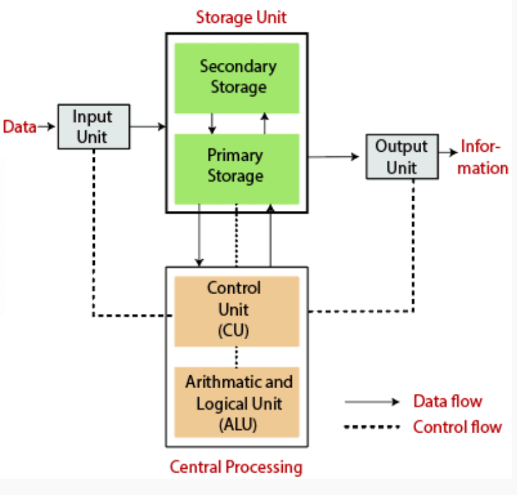

<!DOCTYPE html>
<html>
   
    <head>
       <title>computer class 11</title>
       <link rel="stylesheet" href="mycss.css">
    </head>
</html>
<body>

<div > 
       <nav class="navbar">
<div><h1 class="logo"><a href="#">Computer grade 11</a></h1></div>
    <div>
        <ul id="leftf">
            <li><a href="navbar.html">Home</a></li>
            <li><a href="chapter1.html">Chapters</a></li>
            <li><a href="syllabus.html">Syllabus</a></li>
            <li><a href="grid.html">Grid</a></li>
            <li><a href="#">Notes</a></li>
            
        </ul>
       </div>
    </nav>
    </div>

    <div class="toc">
      <h4>Contents</h4>
      <ul>
        <li><a href="chapter1.html" id="when_clicked">Chapter 1:Computer System</a></li>
        <li><a href="chapter2.html">Chapter 2:Number System, Conversion and Boolean Logic</a></li>
        <li><a href="chapter3.html">Chapter 3:Computer software and Operating System</a></li>
        <li><a href="chapter4.html">Chapter 4:Application Package</a></li>
        <li><a href="chapter5.html">Chapter 5:Programming Concepts and logics</a></li>
        <li><a href="chapter6.html">Chapter 6:Web technology - I</a></li>
        <li><a href="chapter7.html">Chapter 7:Multimedia</a></li>
        <li><a href="chapter8.html">Chapter 8:Information Security and Cyber Law</a></li>
      </ul>
    </div>


<div class="chapter1">
     <h1>Chapter 1:Computer System</h1>
     <h3>Introduction</h3>
     <P>Computer is an electronic device device derived from the Latin word 
      "computere" which means to calculate. It accepts raw facts and figures as
       an input which are isolated and uninterpreted through input device, process 
       it according to the requirement of the user or command supplied by the user, 
       store it before and after processing of require and produce a meaningful information
        as an output through an output device. Generally, computer works on
         IPO (Input-Process-Output) cycle. It follows GIGO (Garbage In Garbage Out) algorithm 
         which means the output is always based on the input supplied by the user. The basic 
         operation of computer is illustrated by following block diagram.</P>
         <p><center></center></p>
          <h4>Some Characteristics of computer</h4>
        
          <p>1.Accuracy: Computer are the accurate machine that means result produced by computer are 100% accurate. Since, it follows GIGO. The error that may arise in output is due to human not by a computer.</p>
          <p>2.Speed: Computer works on tremendously high speed. The operating speed of computer are measured in  millisecond, microsecond, picosecond and nanosecond which means computer can perform millions and billions of instruction per second.</p>
          <p>3.Storage: It is the area or unit which is capable of storing data and information for present and future use. Storing data allows users to retrieve it whenever required. These days computer comes with high volume of memory which are measured in Megabyte (1024 KB) , Gigabyte (1024 MB), Terabyte(1024 GB) and Petabyte(1024 TB).</p>
          <p>4.Versatility: Computer are generally design to serve more than one type of work. The implementation of computer are not only limited to specific purpose, they solve general requirement of the user and can be used in more than 1 type of job.</p>
          <p>5.Diligence: The feature of computer in which computer doesn't get tired even after working for long period of time. Computer can perform any number of task continuously until it is accomplished. Once the instruction is given computer follows the command till it gets terminated.</p>
          <p>6.Automatic: Computer is an automatic machine. Once the instruction is generated it perform accordingly until command is terminated. We don't have to issue continuous command in order to operate the computer. This is called automatic.</p>
          <p>7.Word size" refers to the number of bits processed by a computer's CPU in one go (these days, typically 32bits or 64bits). Data bus size, instruction size, address size are usually multiples of the word size.</p>
        
        

  <h4>Application/implementations/uses of computer</h4>
  
  <ul>
    <li>Education: Nowadays, computer are highly used in teaching and learning process. Many interesting graphics can be made and provided for easy learning. Also, computer provide features of internet which make learning easy and fun.</li>
      <li>Communication: Computer is massively used in communication. Communication is done by e-mail, chat, online conferencing. e-fax etc with help of internet in computer. It has made the communication faster, easier and cheaper.</li>
      <li>Business: In business sector, computer are used to generate invoice, maintain stock and make statistical analysis. E-commerce is the new and emerging way of buying and selling goods and service through used of electronic means and media.</li>
      <li>Engineering and designing: Scientific and engineering design requires complex and massive computations. Design of bridges, towers, buildings, generators, motors, electrical transmission etc requires precise computation which are done through computers. </li>
      <li>Science and research</li>
      <li>Military</li>
      <li>Industry</li>
      <li>Medicine</li>
      <li>Robotics</li>
  </ul>
  <h4>Generations Of Computer</h4>
  
    <h5>1.First Generation Of Computer(1946-1958)</h5>
  <ul>
    <li>They used vacuum tubes as their basic electronic components used to control and amplify electronic signals.    </li>
    <li>They were big in size, consume more electricity and generate large amount of heat thus required air conditioning system to keep device cool.    </li>
    <li>They were unreliable and were prone to frequent hardware failure.   </li>
    <li>They were normally not used for commercial purpose.    </li>
    <li>Machine level language was used to program these computers.</li>
  </ul>
  <p>eg.ENIAC,EDVAC,EDSAC,UNIVAC</p>
  <h5>2.Second generations computer (1959-1964)</h5>
  <ul>
    <li>They used transistors as their basic electronic components.</li>
    <li>They were small in size as compared to first generation thus consume less electricity and generate less heat.</li>
    <li>They were less prone to hardware failure thus more reliable.</li>
    <li>They were not also for commercial purpose because production was difficult and costly.    </li>
    <li>Assembly language were used to program these computers.   </li>
  </ul>
  <p>eg: IBM 7000, IBM 1401, IBM 1620, NCR 304, MARK III, ATLAS</p>
  <h5>Third generations computer ( 1965-1974 )</h5>
  <ul>
    <li>They used Integrated Circuits (IC) as their basic electronic components.</li>
    <li>They were smaller in size, consume less electricity and generate less amount of heat.</li>
    <li>They were faster and more reliable compared to first and second generations.</li>
    <li>They were widely used for the commercial application all over the world.</li>
    <li>High level language were used to program these computers.</li>   
  </ul>
  <p>eg: PDP-8, PDP-11, ICL 2900 series, IBM 360, IBM 370  </p>
  <h5>4. Fourth generation computer (1975-1990) </h5>
  <ul>
    <li>They use VLSI ( Very Large Scale Integrated Circuits ) as their main electronic components.</li>
    <li>There size were drastically reduced and hence were they were much more portable.</li>
    <li>They were faster in processing and were much more reliable.</li>
    <li>They have larger memory up to GB and TB.</li>
    <li>They use different advance high level language to program this computer.</li>
  </ul>
  <h5>5. Fifth generation computer (1990-onwards)</h5>
  <ul>
    <li>They use ULSIC (Ultra Large Scale Integrated Circuit) or Microprocessor as their major electronic components.</li>
    <li>They have or will have artificial intelligence.</li>
    <li>They have tremendously high processing unit due to parallel processing.</li>
    <li>They are capable of image processing, speech or voice recognition.</li>
    <li>They use different high level language to program this computer.</li>
  </ul>
  <p><strong>Introduction to computer system</strong></p>
<p> A system is a set of detailed methods, procedures, and routines created to carry out a specific activity, perform a duty, or solve a problem. In a system, different units coordinate with each other so that they work as a whole. Without any of the units, the whole system is affected.</p>
<p>Similarly, a computer system is also a combination of hardware, software, and peripherals which are organized together to run our computer system smoothly. Basically, our computer system works on the IPO (Input Process Output) cycle. So, it is mandatory/compulsory for different units to work together as a whole in order to convert raw facts and figures into meaningful information. Without any one of these units, the computer starts malfunctioning.</p>
<p>The design, arrangement, construction, or organization of the different parts of the computer system is known as computer architecture.</p>

<p><strong>Components/Elements of Computer System</strong></p>
<p>A computer system has several basic components or elements which are listed below:</p>
<ul>
  <li>Hardware (Input, Output, Processing, and Storage)</li>
  <li>Software</li>
  <li>Data/Information</li>
  <li>Procedure</li>
  <li>People</li>
  <li>Communication</li>
</ul>

<p><strong>Hardware:</strong> Hardware is the physical devices on the computer which we can touch and see. Without hardware, software cannot work. For example: devices like keyboard, mouse, CPU, hard disk, and RAM are commonly used hardware devices.</p>

<p><strong>Software:</strong> The collection of instructions is known as a program, which performs some specific function. Software describes how hardware should function and helps in proper utilization and mobilization of computer hardware. For example: Operating system, MS-Office, Billing software, etc.</p>

<p><strong>Data/Information:</strong> The raw facts and figures that are isolated, uninterpreted, and don't give any sense are known as data. Whereas, the meaningful result obtained after processing data according to the supplied instruction is known as information.</p>

<p><strong>People/User:</strong> It is the most important part of the computer system. People operate the computer hardware and create the computer software. People help generate commands to operate the computer system. Without the user, no hardware and software can be mobilized.</p>

<p><strong>Procedure:</strong> Procedures are the description of how things are done. It includes steps for converting raw facts and figures into meaningful information. It includes the general guidelines of how the computer should be used.</p>

<p><strong>Communication:</strong> The data are shared among different components of our computer system in the form of electronic signals. The exchange of data and information between several components can also be termed as communication.</p>

<p><strong>Basic hardware components of a computer system:</strong></p>
<ol>
  <li>Input unit</li>
  <li>Output unit</li>
  <li>Processing unit</li>
  <li>Storage unit</li>
</ol>

<p><strong>Input Unit:</strong> The input device accepts data and instructions from the user; hence the device or unit used to feed raw facts and figures to the computer system for processing, along with a set of instructions, is called the input unit.</p>
<ul>
  <li>It accepts the list of instructions and data from the outside world.</li>
  <li>It converts the supplied instructions and data into computer-acceptable form (binary code).</li>
  <li>It supplies the converted instructions and data to the computer system for further processing.</li>
</ul>
<p>Some of the commonly used input devices are: Keyboard, trackpad, touchscreen, mouse, light pen, scanner, BCR, MICR, OCR, joystick, trackball, etc.</p>

<p><strong>Output Unit:</strong> The job of the output unit is just the reverse of an input unit. It supplies information and the result of computation to the outside world. Thus, it links the computer with the external environment. </p>
<ul>
  <li>It accepts the result produced by the computer, which is not understandable to us.</li>
  <li>It converts the result into a human-understandable form.</li>
  <li>It supplies the converted results to the outside world.</li>
</ul>
<p>Commonly used output devices are: Monitor, printers, speakers, plotters, etc.</p>

<p>There are two types of output devices:</p>
<ol>
  <li><strong>Hard Copy output:</strong> These types of output are in print form on paper or some material that can be touched and carried to be shown to others. It is permanent in nature, so we can look after these outputs even if there is no computer. Unlike soft copy output, these types of output do not need a continuous supply of power. For example, the output produced on paper or other materials by printers or plotters is known as hard copy output, and the device is known as a hard copy output device. The commonly used hard copy output devices are printers and plotters.</li>
  <li><strong>Soft Copy output:</strong> Soft copy output refers to the data shown on the display screen or produced by the speaker. These types of output are untouchable. They are temporary in nature, meaning the output cannot be carried to be shown to others. These types of output exist only when there is a computer or continuous electricity supply. It is non-portable compared to hard copy output. For example, the output produced on the display screen or the sound produced from the speaker is soft copy output, and the devices are known as soft copy output devices. The commonly used soft copy output devices are speakers and monitors.</li>
</ol>
 <h4>Some Questions and Answers</h4>
 ```html
<p>
  <strong>1. Why computer is known as versatile and diligent device? Explain. [HSEB 2069]</strong><br>
  A computer is called versatile and diligent because it can perform many tasks quickly and accurately without getting tired.
</p>

<p>
  <strong>2. What are the application areas of computer? Explain in brief. [HSEB 2067]</strong><br>
  Computers are used in business, education, science, medicine, communication, and entertainment. They help process data, conduct research, and run various applications.
</p>

<p>
  <strong>3. Why is Charles Babbage known as ‘Father of the Computer’? [HSEB 2062]</strong><br>
  Charles Babbage is known as the “Father of the Computer” because he designed the first mechanical computer, which laid the foundation for modern computers.
</p>

<p>
  <strong>4. Describe at least five ways in which information technology can help students studying subjects other than computing. [HSEB 2062]</strong><br>
  Information technology helps students by providing online research tools, educational software, virtual labs, interactive lessons, and easy access to global information. It also enhances communication and collaboration.
</p>

<p>
  <strong>5. Write brief note on the achievement of the following computer scientist: Howard Aiken [HSEB 2062]</strong><br>
  Howard Aiken built the Harvard Mark I, one of the first large-scale computers, which greatly advanced the use of computers in solving complex calculations.
</p>

<p>
  <strong>6. Explain the evolution of computer describing the technologies used in different generations. [HSEB 2059]</strong><br>
  Computers evolved from using vacuum tubes (first generation) to transistors (second generation), then to integrated circuits (third generation), and finally to microprocessors (fourth generation), with each step improving speed, size, and reliability.
</p>

<p>
  <strong>7. What do you mean by generation of computer? Explain the characteristics of third generation of computers. [HSEB 2061]</strong><br>
  A generation of computer marks a phase in computer development. Third generation computers used integrated circuits, making them smaller, faster, more reliable, and more energy efficient.
</p>

<p>
  <strong>8. Compare and contrast between first and second generation of computers. [HSEB 2011]</strong>
</p>
<table border="1" cellspacing="0" cellpadding="5">
  <tr>
    <th>Feature</th>
    <th>First Generation</th>
    <th>Second Generation</th>
  </tr>
  <tr>
    <td>Technology</td>
    <td>Vacuum Tubes</td>
    <td>Transistors</td>
  </tr>
  <tr>
    <td>Size</td>
    <td>Very Large</td>
    <td>Smaller</td>
  </tr>
  <tr>
    <td>Speed</td>
    <td>Slow</td>
    <td>Faster</td>
  </tr>
  <tr>
    <td>Reliability</td>
    <td>Less Reliable</td>
    <td>More Reliable</td>
  </tr>
</table>

<p>
  <strong>9. Differentiate between second and third generation of computer. [HSEB 2070]</strong><br>
  Second generation computers used transistors, while third generation computers used integrated circuits. The use of integrated circuits made third generation computers smaller, faster, and more reliable.
</p>

<p>
  <strong>10. What is generation of computer? Describe the third generation of computer. [HSEB 2070]</strong><br>
  Generation of computer means a phase defined by a major technological change. Third generation computers used integrated circuits, offering better speed, smaller size, and higher reliability compared to previous generations.
</p>

<p>
  <strong>11. Describe the major characteristics of fourth generation of computers. [HSEB 2064/2070/2071]</strong><br>
  Fourth generation computers use microprocessors. They are very fast, compact, user friendly, and support advanced software with powerful graphics and networking features.
</p>

<p>
  <strong>12. Explain the technologies used in different generation of computer. [HSEB 2069]</strong><br>
  The first generation used vacuum tubes, the second generation used transistors, the third generation used integrated circuits, and the fourth generation used microprocessors. Each technology improved performance and reduced size.
</p>

<p>
  <strong>13. Compare the distinctions between third and fourth generations of computer. [HSEB 2060/2071]</strong>
</p>
<table border="1" cellspacing="0" cellpadding="5">
  <tr>
    <th>Feature</th>
    <th>Third Generation</th>
    <th>Fourth Generation</th>
  </tr>
  <tr>
    <td>Technology</td>
    <td>Integrated Circuits</td>
    <td>Microprocessors</td>
  </tr>
  <tr>
    <td>Speed</td>
    <td>Fast</td>
    <td>Very Fast</td>
  </tr>
  <tr>
    <td>Size</td>
    <td>Moderate</td>
    <td>Compact</td>
  </tr>
  <tr>
    <td>User Friendliness</td>
    <td>Basic Interface</td>
    <td>Advanced Interface</td>
  </tr>
</table>
<p>
  <strong>1. Distinguish among the terms, ‘hardware’, ‘software’ and ‘firmware’. [HSEB 2059, 2063]</strong><br>
  Hardware refers to the physical components of a computer. Software is the collection of programs and data that run on the hardware. Firmware is a special type of software that is permanently stored on hardware devices to control their functions.
</p>

<p>
  <strong>2. Explain the function of CPU. [HSEB 2064]</strong><br>
  The CPU (Central Processing Unit) is the brain of the computer. It processes instructions, performs calculations, and controls data flow between different parts of the computer.
</p>

<p>
  <strong>3. Explain the work done by control unit and ALU of the computer. [HSEB 2062]</strong><br>
  The Control Unit directs the operation of the computer by fetching and decoding instructions. The ALU (Arithmetic Logic Unit) performs arithmetic and logical calculations required by the program.
</p>

<p>
  <strong>4. What is memory? Differentiate between primary and secondary memory. Why hard disk is popular than floppy disk? Explain. [HSEB 2064]</strong><br>
  Memory is used to store data and instructions. Primary memory (RAM) is fast and temporary, used during active processing. Secondary memory (like hard disks) provides permanent storage. Hard disks are more popular than floppy disks due to their higher storage capacity, faster data access, and greater reliability.
</p>

<p>
  <strong>5. What is memory? Differentiate between primary and secondary memory. [HSEB 2066, 2070, 2071]</strong>
</p>
<table border="1" cellspacing="0" cellpadding="5">
  <tr>
    <th>Aspect</th>
    <th>Primary Memory</th>
    <th>Secondary Memory</th>
  </tr>
  <tr>
    <td>Speed</td>
    <td>Fast</td>
    <td>Slower</td>
  </tr>
  <tr>
    <td>Volatility</td>
    <td>Volatile (temporary)</td>
    <td>Non-volatile (permanent)</td>
  </tr>
  <tr>
    <td>Examples</td>
    <td>RAM, Cache</td>
    <td>Hard Disk, SSD, USB drives</td>
  </tr>
</table>

<p>
  <strong>6. What is the importance of primary and secondary memory in a computer system? [HSEB 2058]</strong><br>
  Primary memory provides the fast access required for the CPU to process current tasks, while secondary memory holds data permanently for long-term storage and retrieval.
</p>

<p>
  <strong>7. What is memory? Explain main memory and secondary memory. [HSEB 2065]</strong><br>
  Memory is the component that stores data and instructions. Main memory (RAM) is used during processing for immediate data needs, whereas secondary memory (hard disk or SSD) stores data permanently for future use.
</p>

<p>
  <strong>8. What are the main types of memory in a computer and explain how do they differ from one another? [HSEB 2062]</strong><br>
  The main types of memory are primary memory (RAM and ROM) and secondary memory (hard disk, SSD). Primary memory is fast and used for immediate processing, while secondary memory offers long-term storage but is slower.
</p>

<p>
  <strong>9. Explain the role of memory in a computer and differentiate between main memory and auxiliary storage. [HSEB 2063]</strong><br>
  Memory stores data that the computer processes. Main memory (RAM) is directly accessed by the CPU for active tasks, while auxiliary storage (like hard disks and USB drives) holds data permanently.
</p>

<p>
  <strong>10. What do you mean by ‘Volatility’? Explain RAM and ROM with the concept and term. [HSEB 2059]</strong><br>
  Volatility refers to whether memory retains data when power is lost. RAM is volatile, meaning it loses data when the computer is turned off, while ROM is non-volatile and keeps its data permanently.
</p>

<p>
  <strong>11. Differentiate between RAM and ROM. [HSEB 2067]</strong>
</p>
<table border="1" cellspacing="0" cellpadding="5">
  <tr>
    <th>Feature</th>
    <th>RAM</th>
    <th>ROM</th>
  </tr>
  <tr>
    <td>Volatility</td>
    <td>Volatile</td>
    <td>Non-volatile</td>
  </tr>
  <tr>
    <td>Usage</td>
    <td>Temporary storage for active processes</td>
    <td>Permanent storage for booting and basic instructions</td>
  </tr>
  <tr>
    <td>Modifiability</td>
    <td>Data can be read and written</td>
    <td>Data is usually read-only</td>
  </tr>
</table>

<p>
  <strong>12. What do you understand by storage media? Why is CD-ROM more reliable than floppy disk? [HSEB 2057]</strong><br>
  Storage media are devices that hold digital data. CD-ROMs are more reliable than floppy disks because they have higher storage capacity, are less susceptible to damage, and offer faster data access.
</p>

<p>
  <strong>13. What is a cache memory? Why is it useful in a computer system? What do you mean by data sequencing? Differentiate between random access and sequential access. [HSEB 2061]</strong><br>
  Cache memory is a small, high-speed memory that stores frequently used data for quick access by the CPU. Data sequencing is the arrangement of data in a logical order. Random access allows the CPU to retrieve data from any location directly, while sequential access requires data to be read in a specific order.
</p>

<p>
  <strong>14. What are the computer peripherals? Differentiate between sequential and random access storage media. [HSEB 2062]</strong><br>
  Peripherals are external devices such as keyboards, mice, and printers. Sequential access storage reads data in a fixed order (like a tape), while random access storage allows the computer to jump directly to any location in the memory.
</p>

<p>
  <strong>15. Explain briefly the functions of input unit and control unit of a computer. [HSEB 2063]</strong><br>
  The input unit gathers data from the user or other devices. The control unit interprets the instructions and coordinates the activities of the computer by directing data between various components.
</p>

<p>
  <strong>16. What is the role of input and output devices in a computer system? Name some of the input and output devices used with computers and explain two of them. [HSEB 2062]</strong><br>
  Input devices (like keyboards and mice) allow users to enter data into the computer, while output devices (such as monitors and printers) display or produce the processed information. For example, a keyboard inputs text data, and a printer produces a hard copy of the digital document.
</p>

<p>
  <strong>17. Write short notes on touch pads and light pens. [HSEB 2060]</strong><br>
  A touch pad is a flat, touch-sensitive surface used to detect finger movement for navigation, often found in laptops. A light pen is a pointing device that detects light from the computer screen to select objects, offering an alternative method for interacting with on-screen elements.
</p>

<p>
  <strong>18. What is printer? Differentiate between softcopy and hardcopy output. [HSEB 2066]</strong><br>
  A printer is an output device that produces physical copies of digital documents. Softcopy output refers to the digital display on a screen, while hardcopy output is the printed version on paper.
</p>

<p>
  <strong>19. What is output device? Differentiate between softcopy and hardcopy output. [HSEB 2064]</strong><br>
  An output device converts processed data into a form understandable by the user. Softcopy output is displayed on devices like monitors, whereas hardcopy output is produced on tangible media such as paper.
</p>

<p>
  <strong>20. Differentiate between Impact printer and Non-impact printer. [HSEB 2062, 63, 65, 67, 70]</strong>
</p>
<table border="1" cellspacing="0" cellpadding="5">
  <tr>
    <th>Feature</th>
    <th>Impact Printer</th>
    <th>Non-impact Printer</th>
  </tr>
  <tr>
    <td>Method</td>
    <td>Prints by striking an inked ribbon against paper</td>
    <td>Prints without physical impact on the paper</td>
  </tr>
  <tr>
    <td>Examples</td>
    <td>Dot Matrix, Daisy Wheel</td>
    <td>Laser, Inkjet</td>
  </tr>
  <tr>
    <td>Noise</td>
    <td>Noisy</td>
    <td>Quieter</td>
  </tr>
</table>

<p>
  <strong>21. What is an output? Distinguish between CRT monitor and LCD monitor. [HSEB 2067]</strong><br>
  Output is the result produced by the computer. CRT monitors use cathode ray tubes to display images and tend to be bulky, while LCD monitors use liquid crystals for a slim, energy-efficient display.
</p>

<p>
  <strong>22. What is a BUS in computer architecture? [HSEB 2059, 2066]</strong><br>
  A BUS is a communication system that transfers data between different components of a computer. It connects the CPU, memory, and peripherals, allowing them to exchange information.
</p>

<p>
  <strong>23. What do you understand by computer software? Name various categories of them, giving at least one example of each. [HSEB 2062]</strong><br>
  Computer software is a set of programs that instruct the computer on how to perform tasks. Categories include:
</p>
<ul>
  <li>System software (e.g., operating systems)</li>
  <li>Application software (e.g., word processors)</li>
  <li>Utility software (e.g., antivirus programs)</li>
</ul>

<p>
  <strong>24. What do you mean by system software and application software? [HSEB 2064]</strong><br>
  System software controls and manages hardware (for example, operating systems), while application software helps users perform specific tasks (for example, spreadsheet programs).
</p>

<p>
  <strong>25. Define software. Explain the different types of software in detail. [HSEB 2064]</strong><br>
  Software is a collection of programs and data used to operate a computer. It is generally divided into:
</p>
<ul>
  <li>System software: Manages hardware and provides a platform for applications.</li>
  <li>Application software: Helps users perform tasks such as document creation or data analysis.</li>
  <li>Utility software: Provides maintenance and optimization functions.</li>
</ul>

<p>
  <strong>26. Describe the differences between serial and parallel interfaces. [HSEB 2061]</strong><br>
  A serial interface sends data one bit at a time over a single channel, while a parallel interface sends multiple bits simultaneously over multiple channels. Serial is often simpler and less expensive, whereas parallel can offer faster data transfer over short distances.
</p>

<p>
  <strong>27. Describe different types of software. [HSEB 2070]</strong><br>
  Software can be categorized into:
</p>
<ul>
  <li>System software – such as operating systems that manage hardware.</li>
  <li>Application software – like word processors that help users create content.</li>
  <li>Utility software – programs designed to maintain and optimize computer performance.</li>
</ul>

<p>
  <strong>28. Describe the Impact Printers with examples. [HSEB 2071]</strong><br>
  Impact printers work by striking a print head against an ink ribbon, which in turn makes contact with the paper. Examples include dot matrix and daisy wheel printers. They are known for their ability to create carbon copies and for their rugged construction.
</p>

<p>
  <strong>29. Describe different types of software. [HSEB 2071]</strong><br>
  Software is divided into system software, application software, and utility software. System software, such as an operating system, controls hardware; application software, like a text editor, helps perform specific tasks; and utility software assists in system maintenance.
</p>

<p>
  <strong>30. List out the functions of CPU. [HSEB 2071]</strong><br>
  The CPU performs several key functions including:
</p>
<ul>
  <li>Arithmetic and logical operations</li>
  <li>Instruction execution</li>
  <li>Data movement between memory and peripherals</li>
  <li>Control of the overall system operations</li>
</ul>

<p>
  <strong>31. Write short notes on:</strong>
</p>
<ul>
  <li>
    <strong>(a) MICR [HSEB 2064/2071]</strong><br>
    MICR (Magnetic Ink Character Recognition) uses magnetic ink and special fonts on checks. A magnetic sensor reads the printed characters by detecting their magnetic properties, which speeds up and secures banking transactions.
  </li>
  <li>
    <strong>(b) Joystick [HSEB 2066/2070]</strong><br>
    A joystick is an input device that detects the tilt and movement of a stick. It converts this movement into electrical signals that control movement in video games and simulations, offering precise directional input.
  </li>
  <li>
    <strong>(c) Scanner [HSEB 2065/2070]</strong><br>
    A scanner converts paper documents into digital form by illuminating the document with a light source. Sensors then capture the reflected light, and the device converts it into digital data, creating a high-quality image of the original.
  </li>
  <li>
    <strong>(d) Light pen [HSEB 2065]</strong><br>
    A light pen is a pointing device that detects light from a computer screen. When moved over the screen, it senses changes in light intensity, allowing the computer to pinpoint the location for user interaction.
  </li>
  <li>
    <strong>(e) OCR [HSEB 2071]</strong><br>
    OCR (Optical Character Recognition) converts printed or handwritten text into digital text. It scans the document with optical sensors, recognizes the shape of each character, and translates them into editable text for digital use.
  </li>
  <li>
    <strong>(f) Touch Screen [HSEB 2060]</strong><br>
    A touch screen is an interactive display that detects user input through touch. It uses capacitive or resistive sensing technology to convert the pressure or electrical changes from a finger or stylus into digital signals.
  </li>
  <li>
    <strong>(g) Compiler versus Interpreter [HSEB 2067]</strong><br>
    A compiler translates the entire program into machine code before execution, creating a standalone executable file. An interpreter reads and executes code line by line during runtime, which helps in debugging but can be slower.
  </li>
  <li>
    <strong>(h) Cache Memory [HSEB 2067]</strong><br>
    Cache memory is a small, fast storage that temporarily holds frequently used data. It works by storing a copy of data from the main memory, so the CPU can access it quickly, thereby enhancing overall system speed.
  </li>
  <li>
    <strong>(i) Laser printer [HSEB 2064, 2065]</strong><br>
    A laser printer uses a laser beam to project an image onto a photoconductive drum. The drum attracts toner particles in the pattern of the image and then transfers and fuses them onto paper using heat, producing sharp, high-quality prints.
  </li>
  <li>
    <strong>(j) Modem [HSEB 2066]</strong><br>
    A modem (Modulator-Demodulator) converts digital signals from a computer into analog signals for transmission over telephone lines and then converts incoming analog signals back into digital form. This allows data to be sent over long distances using existing phone networks.
  </li>
</ul>

</div>
</body>
</html>